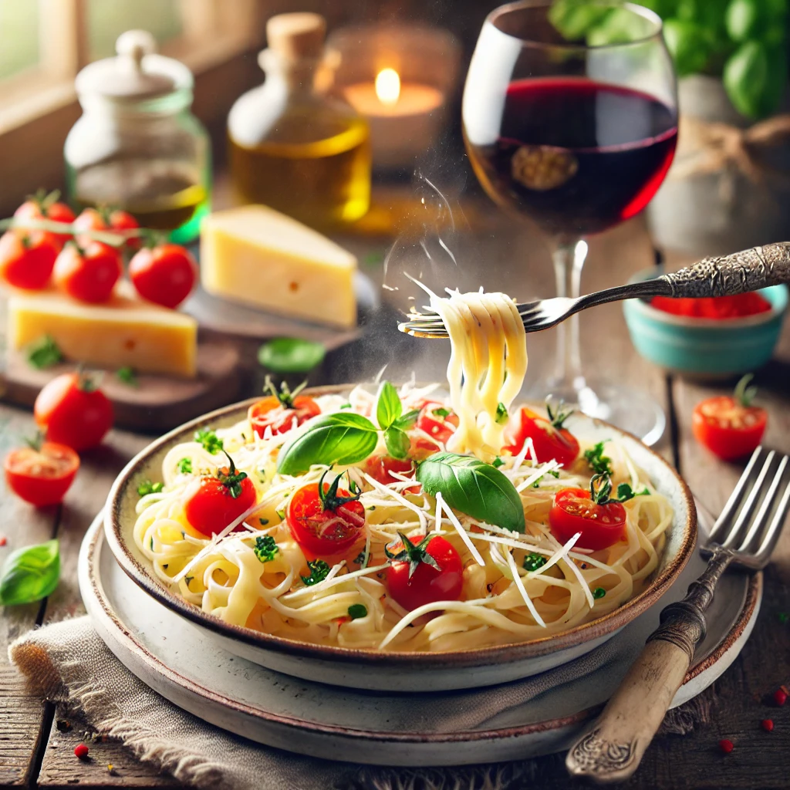

Pasta
Ingrédients
- 200g de pâtes
- 2 cuillères à soupe d'huile d'olive
- 2 gousses d'ail
- 400g de tomates concassées
- Sel et poivre
- Basilic frais
- Parmesan râpé
Instructions
- Faire cuire les pâtes selon les instructions sur l'emballage.
- Dans une poêle, chauffer l'huile d'olive et ajouter l'ail émincé.
- Ajouter les tomates concassées et laisser mijoter pendant 10 minutes.
- Assaisonner avec du sel et du poivre.
- Ajouter les pâtes cuites à la sauce et bien mélanger.
- Servir avec du basilic frais et du parmesan râpé.